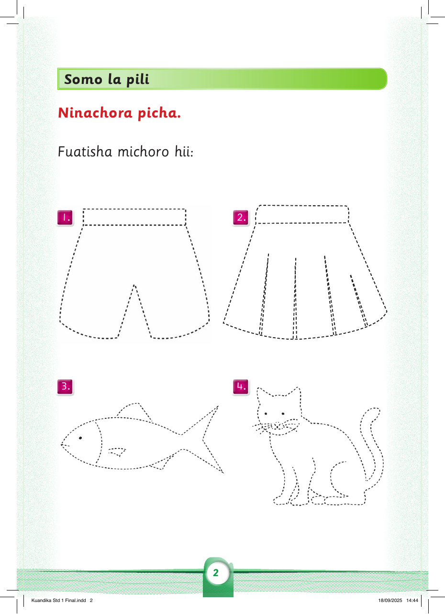
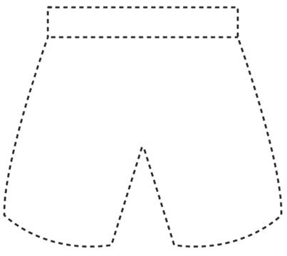
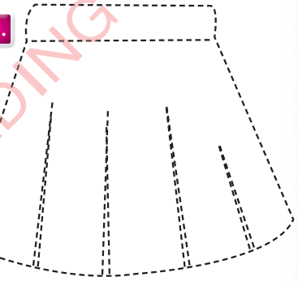
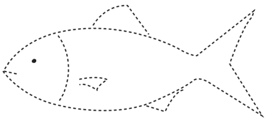
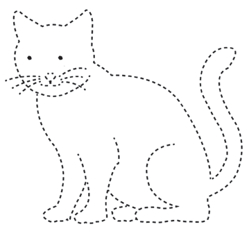

Somo la pili
Ninachora picha.
Fuatisha michoro hii /kwa kutumia spa willi fuatisha michoro hii :
1.

2.

3.

4.


Ninachora picha.
Fuatisha michoro hii /kwa kutumia spa willi fuatisha michoro hii :



